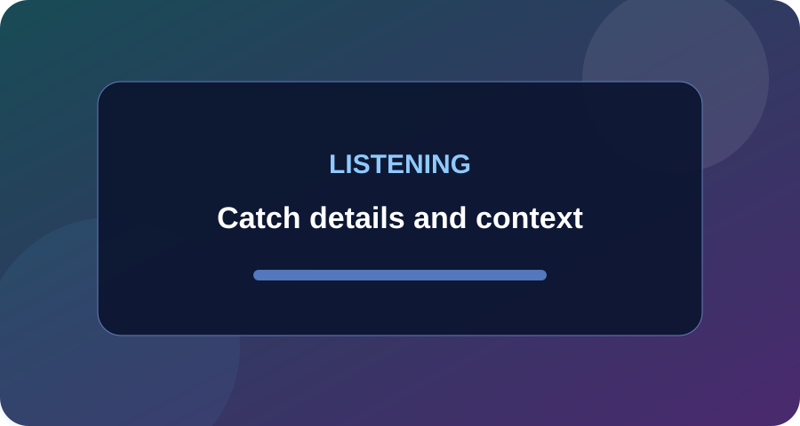
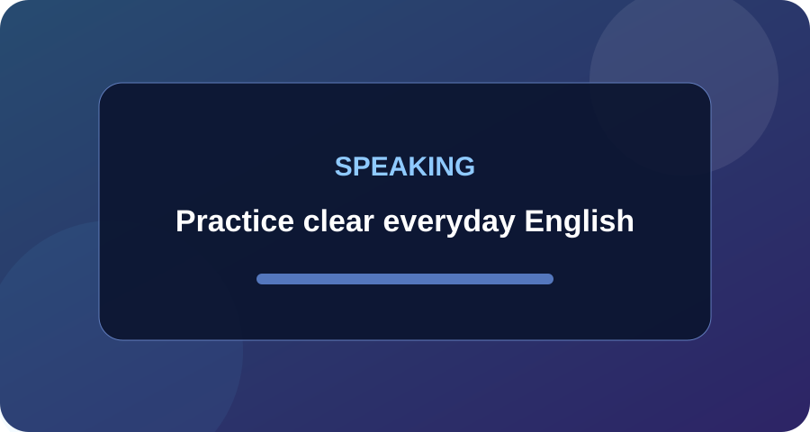
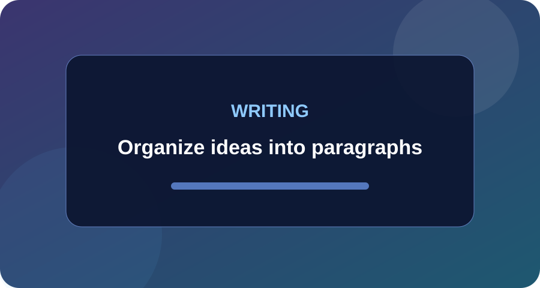
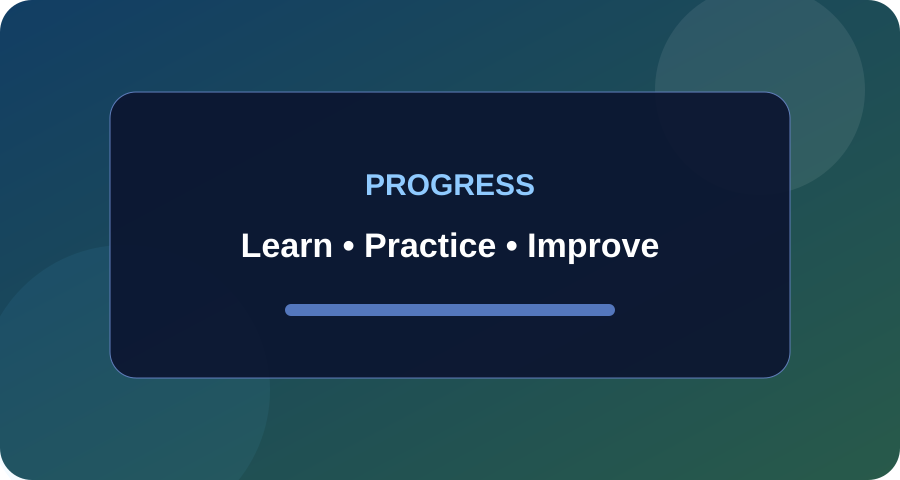

CSS Grid Image Gallery
Assignment 2: nine local images in equal-width CSS Grid columns with gaps and hover captions.






Assignment 2: nine local images in equal-width CSS Grid columns with gaps and hover captions.



